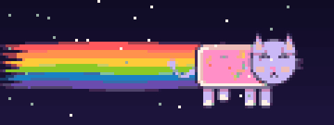

Karta 1 / 6
Leitner · pudełko 3
kliknij, aby odsłonić odpowiedź
index.html) nie zostało zmienione. Kliknij przełącznik w prawym górnym rogu, kliknij kartę żeby
odsłonić odpowiedź, kliknij ocenę żeby przejść do kolejnej fiszki.
